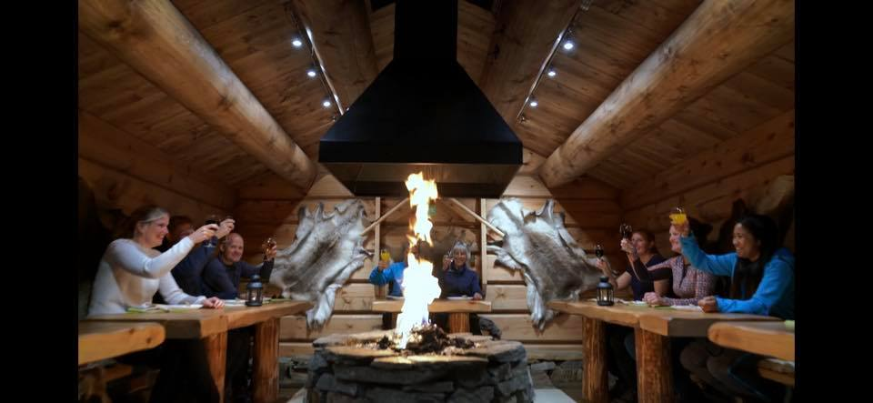
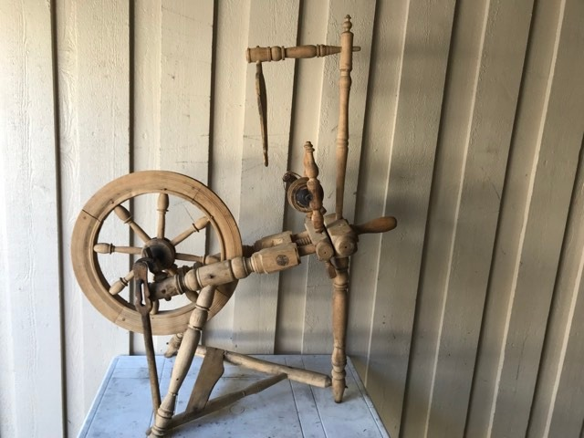

Her på museets nettsted har vi to nettutstillinger! Klikk deg videre for å se på våres byggninger og gjenstander.
På tussedal bygdemuseum har vi flere ulike historiske bygninger. Du kan se dem i både nettutstillingen og inne på museet.
Hovedbyggene på museet
Vi har også hester på museet
 Hovedbyggene på museet
Hovedbyggene på museet
Vi har også hester på museet

På museet har vi også kjøkken

På stuen spiser vi noen ganger i felleskap
Vi har flere ulike gjenstander i det digitale museet.
Gammelt strykehjern brukt til å stryke klær
Oppbevaringsskrin med svimerker bue merker
Denne gamle stolen har vært på museet i århundre
Barkhøvl brukt til å høvle bark
Rokk brukt til å spinne garn
Vaskebrett brukt til å vaske klær

Kjøttøks en brukte til å kutte opp kjøtt
Dersom du ønsker å lese mer om museumsgjenstander kan du skjekke ut digitalt museum! De har flere spennende museumsgjenstander fra museum over hele landet!
Besøk digitalt museum!